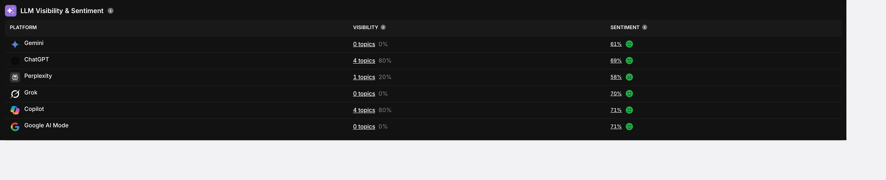

Glory O. — Cross-Industry Work
Systematic AI workflows for research and strategy—delivering faster launches, measurable results, and content that ranks.
Most strategists deliver great work once, then start from scratch on the next project. I build documented systems that produce consistent quality across clients, niches, and content types—so the process gets faster, not slower.
Most teams choose: move fast with AI and ship mediocre content, OR maintain quality and move slowly.
These systems solve both: Quality gates catch issues that would slip through under deadline pressure—fake local references, keyword stuffing, voice inconsistencies, unsourced claims. The frameworks enforce standards I'd maintain on Day 1 of a project, even on Day 100.
Repeatability compounds quality: Each project refines the system. Client #5 gets better work than Client #1 because the constraints have evolved. Same structural approach works across industries—different entities, different compliance rules, same quality baseline.
The result: Consistent quality across projects. Systems that improve over time. Standards that scale without degrading.
New website, zero content, tight deadline. Traditional research-first approach takes 6 weeks before publishing anything. AI-accelerated strategy gets clients live in 10 days—with real data flowing.
New fencing website, zero existing content, client needs to launch fast. Traditional approach: spend 3-4 weeks researching competitors, mapping keywords, building strategy—before writing a single page. Client can't launch, can't test, can't gather performance data. Market opportunity slips away.
Semantic SEO & Entity Mapping:
Strategic Components:
Client launched Week 2 instead of Week 6. Started gathering real performance data immediately—what ranks, what converts, which submarkets drive calls.
Full website build from scratch for an owner-operated fencing contractor. Education-first business model required content that ranks AND functions as a sales tool customers actually read.
New website build from scratch for an owner-operated fencing contractor. The business model: education-first sales. He walks customers through material specifications, soil conditions, and local regulations before closing deals. The website needed to serve two purposes: rank for "Austin fencing" AND function as a reference tool he could send to potential/returning customers during conversations. Not just traffic — real utility.
He didn't want generic SEO pages. He wanted a resource he could reference during sales calls when explaining why metal posts matter in clay soil, or why Bee Cave projects need different planning than Pflugerville. The semantic mapping worked because it was built around his actual conversations with customers.
A website that ranks AND closes. He sends pages to customers during consultations. That's the real win.
New fencing website (January 2025) in Eastern North Carolina. Beyond traditional SEO, structured content to appear when customers ask ChatGPT, Perplexity, and Copilot for fencing advice.

Search Atlas LLM Visibility data—within 2 months of launch
New website launch needing visibility in both traditional search AND AI-powered research tools as customers increasingly ask ChatGPT "what fence works best in sandy NC soil" instead of Googling.
Content that ranks in both traditional search AND AI-powered answers. As customers shift from Googling to asking ChatGPT research questions, this content is positioned as the cited source.